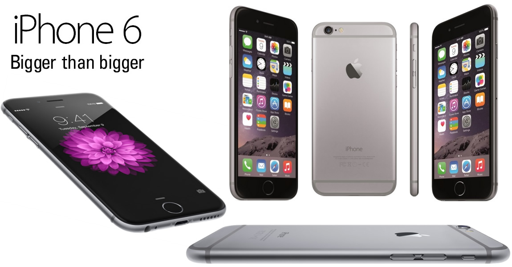
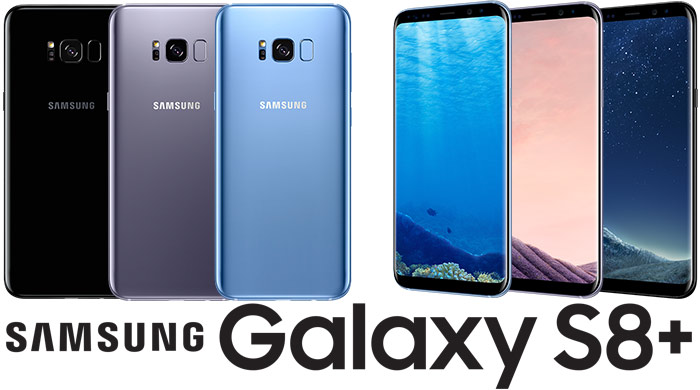

HELLO!
bye@
Leading Mobile Companies

IPHONE
Up to the iPhone 4, all iPhone models, as well as other iOS devices were manufactured exclusively by Foxconn, based in Taiwan. In 2011, after Tim Cook became CEO of the company, Apple changed its outsourcing strategy, for the first time increasing its supply partners. The iPhone 4s in 2012 was the first model which was manufactured simultaneously by two stand-alone companies: Foxconn as well as Pegatron, also based in Taiwan. Although Foxconn is still responsible for the larger share of production, Pegatron's orders have been slowly increased, with the company being tasked with producing a part of the iPhone 5C line in 2013, and 30% of the iPhone 6 devices in 2014. The 6 Plus model is being produced solely by Foxconn.

SAMSUNG
This section contains content that is written like an advertisement. Please help improve it by removing promotional content and inappropriate external links, and by adding encyclopedic content written from a neutral point of view. (July 2015) (Learn how and when to remove this template message)The Samsung Library at Sungkyunkwan University Natural Sciences Campus in Suwon, South KoreaSamsung Fire & Marine Insurance HQSamsung comprises around 80 companies.[84] It is highly diversified, with activities in areas including construction, consumer electronics, financial services, shipbuilding and medical services.[84]In FY 2009, Samsung reported consolidated revenues of 220 trillion KRW ($172.5 billion). In FY 2010, Samsung reported consolidated revenues of 280 trillion KRW ($258 billion), and profits of 30 trillion KRW ($27.6 billion) (based upon a KRW-USD exchange rate of 1,084.5 KRW per USD, the spot rate as of 19 August 2011).[85] However, it should be noted that these amounts do not include the revenues from all of Samsung's subsidiaries based outside South Korea

NOKIA
NOKIA
Nokia Corporation[3] (Finnish: Nokia Oyj, Finnish pronunciation: [ˈnokiɑ], UK: /ˈnɒkiə/, US: /ˈnoʊkiə/), stylised as NOKIA, is a Finnish multinational communications and information technology company, founded in 1865. Nokia's headquarters are in Espoo, Uusimaa, in the greater Helsinki metropolitan area.[1] In 2014, Nokia employed 61,656 people across 120 countries, did business in more than 150 countries, and reported annual revenues of around €12.73 billion.[2] Nokia is a public limited company listed on the Helsinki Stock Exchange and New York Stock Exchange.[4] It is the world's 274th-largest company measured by 2013 revenues according to the Fortune Global 500, and is a component of the Euro Stoxx 50 stock market index.[5][6]The company has had various industries in its 151-year history. It was founded as a pulp mill, but since the 1990s focuses on large-scale telecommunications infrastructures, technology development, and design licensing.[7] Nokia is also a major contributor to the mobile telephony industry, having assisted in the development of the GSM and LTE standards, and was, for a period, the largest vendor of mobile phones in the world. Nokia's dominance also extended into the smartphone industry through its Symbian platform, but was eventually overshadowed by competitors. Nokia partnered with Microsoft in 2011, agreeing to exclusively use Microsoft's Windows Phone platform on future smartphones; its mobile phone business was eventually bought by Microsoft, in a deal totaling $7.17 billion.[8][9] Nokia's former CEO Stephen Elop and several other executives joined the new Microsoft Mobile subsidiary of Microsoft as part of the deal, which was completed on 25 April 2014.

ONEPLUS
OnePlus
OnePlus was founded on 16 December 2013 by former Oppo vice-president Pete Lau (刘作虎) and Carl Pei (裴宇).[2] According to the Chinese government's documentation, the only institutional stockholder in OnePlus is Oppo.[3] Although Lau initially denied that OnePlus was a wholly owned subsidiary of Oppo, upon release of the regulatory filings they admitted that they are owned by Oppo and are "in talks with other investors" (although nothing has been announced to date).[4] The company's main goal was to design a smartphone that would balance high-end quality with a lower price than other phones in its class, believing that users would "Never Settle" (Chinese: 不将就) for the lower-quality devices produced by other companies. Lau explained that "we will never be different just for the sake of being different. Everything done has to improve the actual user experience in day-to-day use."[5][6] He also showed aspirations of being the "Muji of the tech industry", emphasizing its focus on high-quality products with simplistic, user-friendly designs.[5] Continuing Lau's association with the platform from the Oppo N1,[6] OnePlus entered into an exclusive licensing agreement with Cyanogen Inc. to base its products' Android distribution upon a variant of the popular custom ROM CyanogenMod and use its trademarks outside of China.